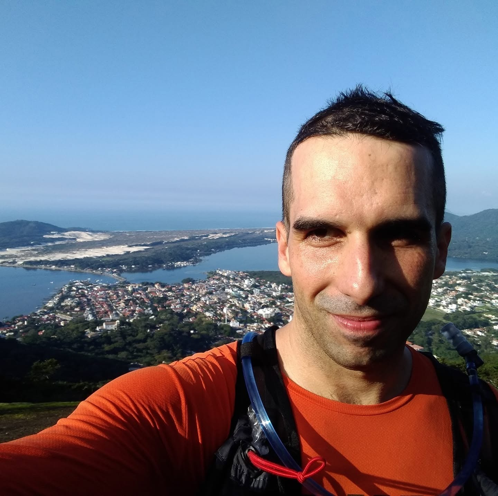

L3C
Laboratório de Conexionismo e Ciências Cognitivas · INE/UFSCConnectionism and Cognitive Science Lab · INE/UFSC
Abrir site →Open website →
Rafael de Santiago
Site pessoal · Professor Adjunto · INE/UFSC · PPGCCPersonal website · Assistant Professor · INE/UFSC · PPGCC
Abrir site →Open website →